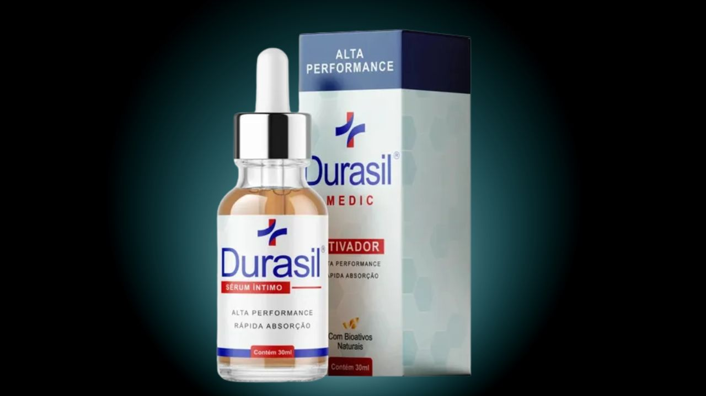

O que encontramos foi diferente do que esperávamos. Leia antes de desistir ou de comprar.

Acesse o site oficial com garantia de 30 dias.
→ Acessar Site Oficial do Durasil✓ Garantia de 30 dias · Entrega discreta · Frete grátis
Pesquisamos o Reclame Aqui, fóruns de saúde masculina e grupos de consumidores. As reclamações existem — mas o padrão encontrado é diferente do que se esperaria de um produto fraudulento.
As críticas se concentram em 3 categorias principais: expectativa de resultado imediato, modo de uso incorreto e compras em canais não oficiais. Nenhuma aponta adulteração da fórmula ou golpe.
É a reclamação mais frequente. Usuários que testaram por menos de 15 dias e concluíram que o produto não funciona.
Reclamações de produtos comprados em marketplaces que não entregaram os resultados prometidos.
Alguns consumidores relataram prazo de entrega acima do informado, especialmente em regiões do Norte e Nordeste.
O padrão de reclamações do Durasil é compatível com o de qualquer suplemento de uso contínuo que exige tempo para mostrar resultado. Não encontramos evidências de fraude, adulteração ou golpe no produto original vendido pelo site oficial.
O maior risco real é comprar em canal não autorizado e receber uma imitação. Para quem compra pelo site oficial com a garantia de 30 dias — o risco financeiro é baixo e controlado.
Garantia de 30 dias · Entrega discreta · Frete grátis para todo o Brasil
→ Acessar Site Oficial do Durasil✓ Aprovado ANVISA · Pagamento seguro · Entrega em 24h
Investigação independente baseada em fontes públicas. Não substitui orientação médica. Este site contém links de afiliado.